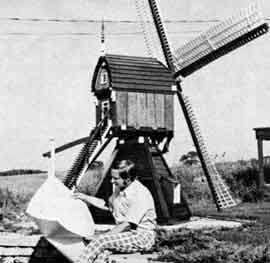

Shades of Don Quixote Are we seeing specters from The Land of Wooden Shoes? Is this the Ghost of Windmills Past come back to chastise us all for our silly, modem ways?
Could be. The structure you see here-dubbed "The Windy-Ten"-is an exact replica of a 15th-century Dutch hollow post mill, built to precise 115 scale. And it's been generating . .'. well, a little electricity, and a lot of admiring double takes from folks who pass by Jack J. Maas' property up near Shelby, Michigan.
Mr. Maas tells us that his wasp-waisted wonder-complete with 14-foot sails and a revolving upper housing/stairway assembly that can be turned into or away from the wind-was constructed in a few months from original plans that he translated into English and scaled down for practical purposes. Obviously, the mechanism ain't the power producer that some of today's advanced windplants are . . . but then again, we've never seen a Savonius turbine or Jacobs three-blader that looked quite as good as this Old World charmer. And Jack says his machine is capable of lighting lights or running small electric appliances if situated in a suitably high-wind (15-20 mph) area.
You say you think you'd like to build one of these little replicas yourself? Well, you're in luck . . . because Mr. Maas has put together a complete set of plans (three 30" X 42" blueprints, a 20-page step-by-step construction guide, and electrical diagrams and schematics) that he says can be used by any reasonably skilled handyman to duplicate his machine. The kit costs just $15.95 . . . but if you'd like to know a little more about the windmill first, send $ 1.00 to Jack J. Maas, Box 111, Shelby, Mich. 49455 and he'll mail you an informative 4-page brochure.
|
 |
|
|